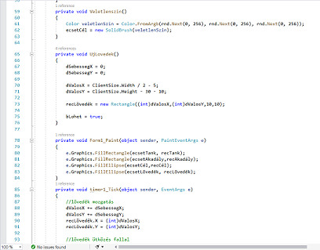

Ezen az oldalon az eddigi tanulmányaim során, a tananyag megértését és elsajátítását segítő, gyakorló feladataim közül mutatnék be néhányat, melyeket saját magam készítettem el.
Foglalkoztam már számítógépes tervezéssel:

programozással:
anyagszerkezettel: